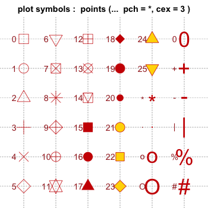
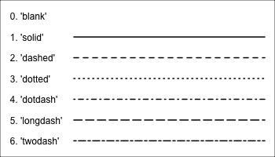
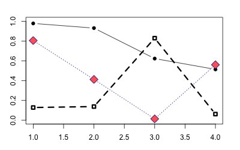
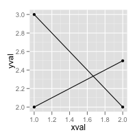
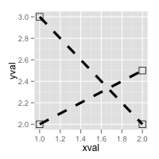
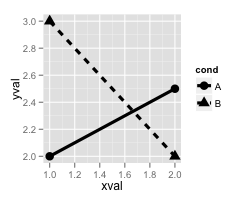
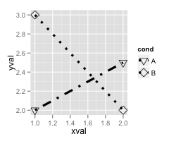
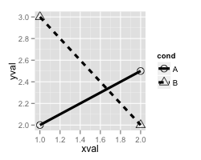
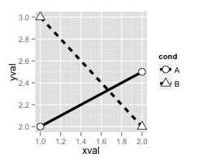

Shapes and line types
Problem
You want to use different shapes and line types in your graph.
Solution
 
Note that with bitmap output, the filled symbols 15-18 may render without proper anti-aliasing; they can appear jagged, pixelated, and not properly centered, though this varies among platforms. Symbols 19 and 21-25 have an outline around the filled area, and will render with smoothed edges on most platforms. For symbols 21-25 to appear solid, you will also need to specify a fill (bg) color that is the same as the outline color (col); otherwise they will be hollow.
Standard graphics
Use the pch option to set the shape, and use lty and lwd to set the line type and width. The line type can be specified by name or by number.
set.seed(331) # Plot some points with lines # Set up the plotting area plot(NA, xlim=c(1,4), ylim=c(0,1)) # Plot solid circles with solid lines points(1:4, runif(4), type="b", pch=19) # Add open squares with dashed line, with heavier line width points(1:4, runif(4), type="b", pch=0, lty=2, lwd=3) points(1:4, runif(4), type="b", pch=23, # Diamond shape lty="dotted", cex=2, # Dotted line, double-size shapes col="#000099", bg="#FF6666") # blue line, red fill

ggplot2
With ggplot2, shapes and line types can be assigned overall (e.g., if you want all points to be squares, or all lines to be dashed), or they can be conditioned on a variable.
# Sample data df <- read.table(header=T, text=' cond xval yval A 1 2.0 A 2 2.5 B 1 3.0 B 2 2.0 ') library(ggplot2) # Plot with standard lines and points # group = cond tells it which points to connect with lines ggplot(df, aes(x=xval, y=yval, group = cond)) + geom_line() + geom_point() # Set overall shapes and line type ggplot(df, aes(x=xval, y=yval, group = cond)) + geom_line(linetype="dashed", # Dashed line size = 1.5) + # Thicker line geom_point(shape = 0, # Hollow squares size = 4) # Large points # Condition shapes and line type on variable cond ggplot(df, aes(x=xval, y=yval, group = cond)) + geom_line(aes(linetype=cond), # Line type depends on cond size = 1.5) + # Thicker line geom_point(aes(shape=cond), # Shape depends on cond size = 4) # Large points # Same as previous, but also change the specific linetypes and # shapes that are used ggplot(df, aes(x=xval, y=yval, group = cond)) + geom_line(aes(linetype=cond), # Line type depends on cond size = 1.5) + # Thicker line geom_point(aes(shape=cond), # Shape depends on cond size = 4) + # Large points scale_shape_manual(values=c(6,5)) + # Change shapes scale_linetype_manual(values=c("dotdash", "dotted")) # Change linetypes
   
By default, ggplot2 uses solid shapes. If you want to use hollow shapes, without manually declaring each shape, you can use scale_shape(solid=FALSE). Note, however, that the lines will visible inside the shape. To avoid this, you can use shapes 21-25 and specify a white fill.
# Hollow shapes ggplot(df, aes(x=xval, y=yval, group = cond)) + geom_line(aes(linetype=cond), # Line type depends on cond size = 1.5) + # Thicker line geom_point(aes(shape=cond), # Shape depends on cond size = 4) + # Large points scale_shape(solid=FALSE) # Shapes with white fill ggplot(df, aes(x=xval, y=yval, group = cond)) + geom_line(aes(linetype=cond), # Line type depends on cond size = 1.5) + # Thicker line geom_point(aes(shape=cond), # Shape depends on cond fill = "white", # White fill size = 4) + # Large points scale_shape_manual(values=c(21,24)) # Shapes: Filled circle, triangle
 
Note
This code will generate the chart of line types seen at the top.
# Set up the plotting area plot(NA, xlim=c(0,1), ylim=c(6.5, -0.5), xaxt="n", yaxt="n", xlab=NA, ylab=NA ) # Draw the lines for (i in 0:6) { points(c(0.25,1), c(i,i), lty=i, lwd=2, type="l") } # Add labels text(0, 0, "0. 'blank'" , adj=c(0,.5)) text(0, 1, "1. 'solid'" , adj=c(0,.5)) text(0, 2, "2. 'dashed'" , adj=c(0,.5)) text(0, 3, "3. 'dotted'" , adj=c(0,.5)) text(0, 4, "4. 'dotdash'" , adj=c(0,.5)) text(0, 5, "5. 'longdash'", adj=c(0,.5)) text(0, 6, "6. 'twodash'" , adj=c(0,.5))